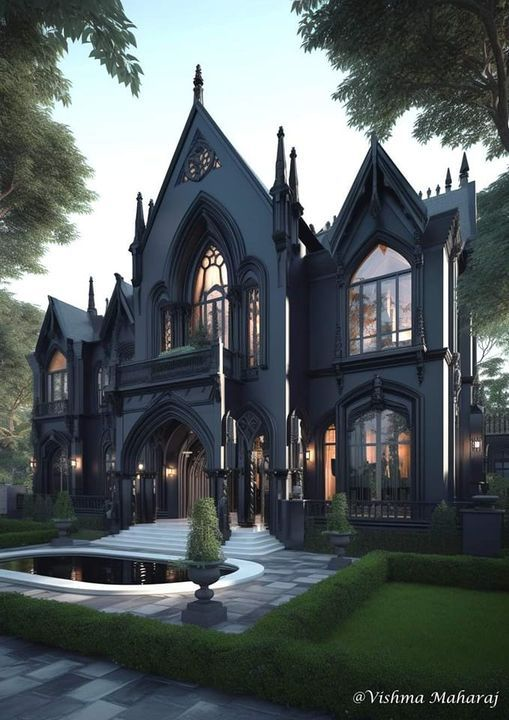

Modern Gothic Fiction - Evolution and Influence
Since its inception in the late 18th century, Gothic literature has significantly evolved. Originally blending elements of horror and romance, it was characterized by dark, mysterious settings, supernatural elements, and an atmosphere of suspense and terror. Modern Gothic fiction builds on these foundations, incorporating contemporary themes and settings while maintaining the genre's signature atmosphere. Today, it explores psychological horror, social issues, and the complexities of human nature, making it more relevant to our times. This evolution keeps the genre fresh and intriguing for new generations of readers.
